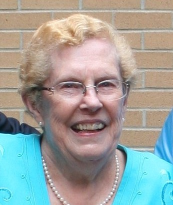
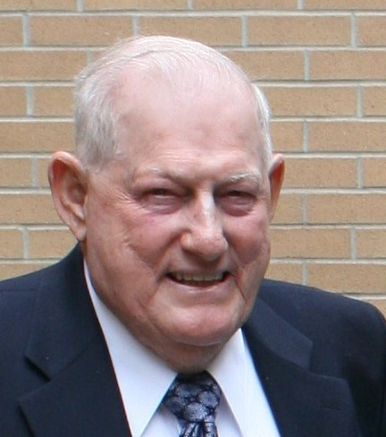
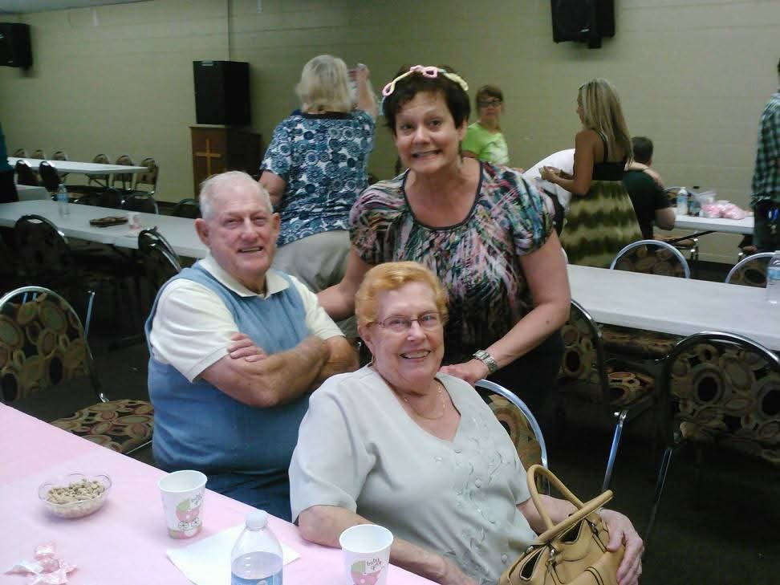
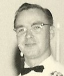
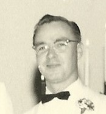

Betty Carolyn Shircliff
Born 17 April 1934, Fairplain, West Virginia
Quick Facts
James Wayne Shircliff (1932–2018) SUPPORTED — married December 1979, Fairfield, Ohio
Immediate Family
Spouses
Robert Lee Hoff (b. 9 June 1930, Clendenin, West Virginia; d. 20 July 2007, Clendenin) SUPPORTEDJames Wayne Shircliff (b. 24 April 1932, Clendenin; d. 3 February 2018, Fairfield, Ohio) SUPPORTED — married December 1979, Fairfield, Ohio
Children
Gregory Paul Hoff (b. 22 February 1958, Clendenin, West Virginia) SUPPORTED — wife Cynthia Anne Hoff; son Brandin Anthony HoffDouglas Earl Hoff (b. 15 August 1959, Charleston, West Virginia) SUPPORTED — wife Patricia Anne Hoff; sons Mitchell Ryan, Brett Allen, Nicholaus, and Mathew
Siblings
- Lawrence Richard Shamblen (1932–1968)
- Lowell Harold Shamblen (b. 1935)
- Clifford Earl Shamblen (b. 1938)
On Family Tree Sites
Research Folder
Life Timeline
1934 · age 0
Born, Fairplain, Jackson Co., WV SUPPORTED
1958 · age 24
Son Gregory born, Clendenin, WV SUPPORTED
1959 · age 25
Son Douglas born, Charleston, WV SUPPORTED
1979 · age 45
Married James Wayne Shircliff, Fairfield, Ohio SUPPORTED
Life Story
Betty Carolyn Shamblen was born April 17, 1934, in Fairplain, Jackson County, West Virginia, the second child of Arvel Lawrence Shamblin and Georgia Mae Fisher. She grew up with her brothers Lawrence, Lowell, and Clifford.
She married Robert Lee Hoff first, and they had two sons, Gregory, born in 1958 in Clendenin, and Douglas, born in 1959 in Charleston. She later married James Wayne Shircliff in December 1979 in Fairfield, Ohio.
Family memory credits Betty twice in her brother Richard's love story: she had met Ruth first and introduced them at the Baptist youth camp on Tyler Mountain, and when Richard backed out of the first wedding plan, Betty brought Ruth and Richard back together through a meeting in Charleston. FAMILY ACCOUNT
Photo Gallery






Sources and Evidence
- Geni, read 2026-11-03: Betty Carolyn Shircliff (Shamblen) profile, spouses, children, and parents SUPPORTED
- FamilySearch, read 2026-11-03: Betty Shamblen, PN3J-DM5, birth 17 April 1934, Fairplain SUPPORTED
- WikiTree: Betty Shamblen-47, daughter of Arvel Shamblin-435 and Georgia Fisher-24678 SUPPORTED
- Ancestry, Rick's Brewster Family Tree: Betty Shamblen, 162817237845 SUPPORTED
- 1940 census, Ripley District, Jackson County, West Virginia (household of Arvel and Georgia) SUPPORTED
- Cliff's autobiography: Betty married Bob Hoff first, then Wayne Shircliff FAMILY ACCOUNT
- Lawrence × Ruth couple profile: Betty introduced Richard to Ruth, and brought them back together FAMILY ACCOUNT
Grades: DOCUMENTED an original record says it · SUPPORTED several records point to it · FAMILY ACCOUNT the family's own telling · UNPROVED a lead, not proved.
Research Notes and Open Questions
- Douglas Earl Hoff's father is shown as both Robert Lee Hoff and James Wayne Shircliff on Geni; how that listing arose is not stated.
- FamilySearch shows Betty as Living with no spouse or children listed; the living flags and the empty spouse/child fields were left untouched, and no death is inferred.
DNA
No DNA matches linked yet.
Profile history: Created 3 November 2026 from Geni, Ancestry, WikiTree, and FamilySearch profiles and family notes.